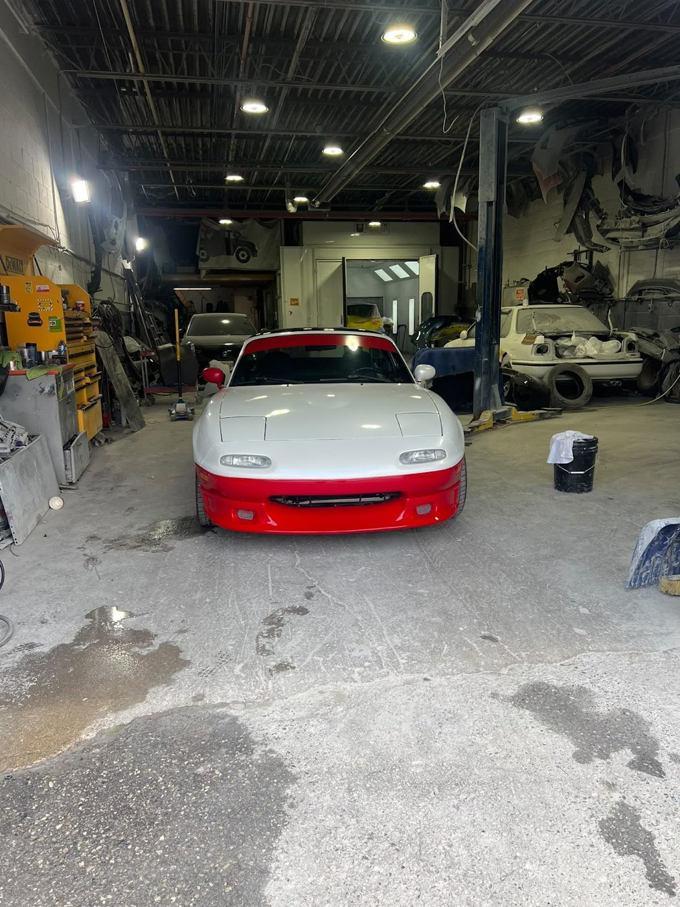

Auto body shop · 1680 Midland Avenue, Unit 11, Scarborough
Collision, paint and a shop that takes on the unusual jobs.
RT Auto is an auto body shop at 1680 Midland Avenue, Unit 11, in Scarborough. Reviewers name Kuna and Theva, and they write about collision repairs, paint matching, and project work — including a 1994 Miata body kit. Call (647) 834-4688.
- Collision repair
- Paint matching
- Body kits
- Dent and bumper repair
- Unit 11, Midland Ave
What the listing and the reviews describe
Collision repair and paint
Ace brought a new Range Rover in after a minor collision damaged the rear bumper and wrote that “when I got the vehicle back, the rear bumper looked better than it did when I originally purchased the vehicle.” Fredy Lara “broght my merceded benz C300 2017” with “two doors at the passenger side bent” and wrote, “Kuna and his team did a great job, quality job!!” Google’s listing topics include bumper repair, dent repair, quarter panel repair, rust repair and paint matching.
Project work, including older cars
Sarfaraz Malek has “a 1994 Miata with a pretty rare Mazdaspeed body kit” and wrote that most shops “didn’t want to do the install.” Kuna “agreed to take on the whole thing, paint, crack repair and install,” “matched 30+ year old paint perfectly,” and “got the kit sitting completely flush.” leslie flores had a 2009 Civic “sitting for 12 years” and wrote, “My car basically looks like new.”
A shop people say they can talk to
SuperPro Jack wrote that “Kuna and Theva are some of the most approachable and professional body shops workers I have ever met,” and that they are “always on time in terms of their estimates.” leslie flores said “communication was always consistent and honest,” and Ace gave “a special shoutout to Kuna for the incredible customer service.”
Work and service notes above come from Google reviews read on 2026-11-19, and from topics on the Google listing itself. No prices are listed here. Call (647) 834-4688 if you have a question about a repair.
1680 Midland Avenue, Unit 11
Look for Unit 11 on Midland Avenue
Monday to Thursday 8 a.m.–6 p.m. · Friday closed · Saturday 9 a.m.–4 p.m. · Sunday 9 a.m.–2 p.m.
RT Auto is in an industrial plaza at 1680 Midland Avenue, Unit 11, in Scarborough. Google lists it as an auto body shop, with a 4.9 rating from 328 reviews as of Nov 19, 2026. Reviewers describe dropping a car off, getting updates through the repair, and picking it up painted and aligned. Other public directories list different hours — especially for Friday and Sunday — so please call (647) 834-4688 before you come, particularly at the weekend.
“Kuna and Theva are some of the most approachable and professional body shops workers I have ever met. They are always on time in terms of their estimates and reasonable with their prices.”
SuperPro Jack, Google review, a week ago (as of Nov 19, 2026). Quoted as written.
What customers say
4.9 ★ from 328 Google reviews (checked Nov 19, 2026). Quotes are word for word. Each one says where it was read: on the Google listing itself, or on a public page that copies reviews. Google shows only a handful of reviews without signing in, so one older quote is a review copied by the canadanear.com directory.
★★★★★
I had my 09 civic coupe sitting for 12 years and finally decided to get it up and running again. Once i got it up and running, i had to get it repainted because the plan is to keep it and drive it for as long as i can get it to go (92,400km). My friend recommended Kuna and RT Auto. I msgd him and scheduled a time to have him take a look and right off the jump, communication was always consistent and honest. I dropped off the vehicle and throughout the duration they always kept me up to date with where things were during the process from when the work started, the prepping, the painting and completion. When i had questions during, same thing. Honest and consistent communication. And the outcome was amazing, could not be any more happier. Everything from the jump was top tier. And the brief conversations we had was not always business. The work and customer service was excellent but what really stood out was the type of person they are. The relationship built is what’s most important because the confidence he has in his work speaks for itself. I highly recommend Kuna and RT Auto to anyone who’s looking for the same work or anything auto body related. It can be challenging finding an honest and top quality work shop that’s priced fair with great overall customer service but not with RT Auto and Kuna. I hope he gets time to work on his classic Camry to have it up and running again because that would answer any questions about their quality of work but Im sure he’d say clients first. My car basically looks like new. Love it. *chefs kiss*
★★★★★
I have a 1994 Miata with a pretty rare Mazdaspeed body kit and I was looking for a shop to paint and install it for a while. Honestly had a really hard time finding one. Most shops I called just didn't seem enthusiastic about the job at all. They were fine with painting it but didn't want to do the install, either because the job was too small or they didn't want to risk damaging old fiberglass. The kit also had a few cracks that needed repairing and some fitment issues on top of that.
When I came across Kuna at RT Auto he agreed to take on the whole thing, paint, crack repair and install. He was enthusiastic about the project from the first time I met him and you could tell he actually cares about his work, which is why I went with him.
The results speak for themselves. He matched 30+ year old paint perfectly, sorted out the fitment issues, and got the kit sitting completely flush, which a lot of shops can't do. My front bumper also had a slight color mismatch from age so he repainted that too and now everything blends together like it came from the factory that way.
Another thing I appreciated was he kept me updated the entire time without me having to chase him down, answered every question I had, and when he needed a couple extra days he just told me straight up instead of rushing it. Price was very fair for the amount of work done and there were no surprise charges at the end.
Overall the results came out better than I could've imagined. Highly recommend Kuna and his team at RT Auto.
★★★★★
I can’t recommend this body shop enough. Kuna and Theva are some of the most approachable and professional body shops workers I have ever met. They are always on time in terms of their estimates and reasonable with their prices. I have this has my go to body shop and you should check them out.
★★★★★
I had an amazing experience with RT Auto after a minor collision damaged the rear bumper on my new Range Rover. I was honestly a little nervous about getting the repair done because the vehicle was so new, but RT Auto exceeded my expectations.
The workmanship was outstanding. when I got the vehicle back, the rear bumper looked better than it did when I originally purchased the vehicle The attention to detail and quality of the repair were excellent, and you genuinely couldn’t tell that the vehicle had ever been damaged.
A special shoutout to Kuna for the incredible customer service. He was professional, friendly, responsive, and made the entire process feel easy and stress-free. It’s rare to find someone who genuinely cares about the customer experience.
I highly recommend RT Auto to anyone looking for quality auto body work and excellent service. I wouldn’t hesitate to bring my vehicle back here in the future. Great work, great people, and an overall 5-star experience!
★★★★★
RT auto was great customer service from the begining to the end. I broght my merceded benz C300 2017.. My car had two doors at the passenger side bent and need it to be straightening and paint. Kuna and his team did a great job, quality job!!. Please with overall repair and my car looks great agan. I would recommend it to anyone to come and also experience great service!!!..
★★★★★
Glad to be recommended to this company.service was reliable, fast and professional.
In the booth, and in the bays
Real photos from RT Auto’s public Google listing and its customers’ reviews. Tap to enlarge.
Visit RT Auto
1680 Midland Ave Unit 11
Scarborough, ON M1P 3C2
Midland Avenue, Scarborough
| Monday | 8 a.m.–6 p.m. |
|---|---|
| Tuesday | 8 a.m.–6 p.m. |
| Wednesday | 8 a.m.–6 p.m. |
| Thursday | 8 a.m.–6 p.m. |
| Friday | Closed |
| Saturday | 9 a.m.–4 p.m. |
| Sunday | 9 a.m.–2 p.m. |
These are the hours on Google today: 8 a.m. to 6 p.m. Monday to Thursday, closed Friday, 9 a.m. to 4 p.m. Saturday, and 9 a.m. to 2 p.m. Sunday. Birdeye and AutoTechIQ instead list Monday to Friday 9 a.m. to 7 p.m. and Sunday closed. canadanear.com lists Friday as open and Sunday 9 a.m. to 2 p.m. Esai Canada lists a shorter day, 9 a.m. to 4:30 p.m. Please call (647) 834-4688 if you are coming on a Friday or a Sunday, or near opening or closing time. Google’s postal code is M1P 3C2; some directories use M1P 3C6.